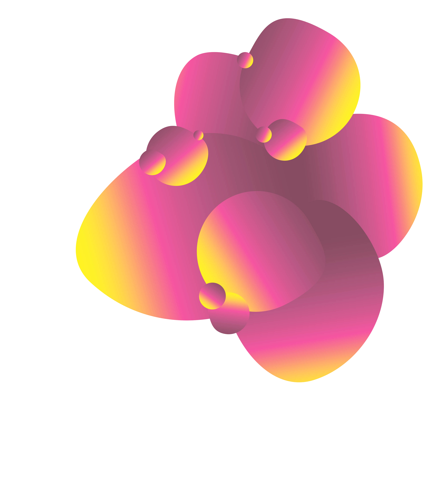

Первый учебный год в школе дизайна
НИУ ВШЭ
Хэй! Добро пожаловать! Здесь я расскажу о том, как создавался мой проект в течении этого года, покажу свой прогресс и результаты.

О проекте
После долгих размышлений, я решила, что организацией, для которой в дальнейшем я буду делать брендинг, будет магазин качеств "Холон".
Почему "Холон"?
Выбрать название оказалось очень проблематично, это заняло много времени и отсрочило создание логотипа. Я перерыла интернет в поисках слов, которые подходят к моей концепции, и остановилась на названии "Холон". Почему? Что это значит? Несмотря на то, что существует город с таким названием, к нему оно не имеет никакого отношения. Помимо наименования, данное слово имеет и другое значение. Холон - нечто, одновременно являющееся и целым само по себе, и частью чего-то ещё. То есть, качества сами по себе целое, существующее как понятие, и являющееся частью человека.
Основная концепция
Магазин человеческих качеств необходим для улучшения себя. Эта мысль пришла ко мне, когда я размышляла о том, как часто я чувствую себя неуверенно, и как это можно исправить.
За метфору я взяла такие слова, как "соединение", "собирание", "дополнение", "изменения", и уже от них отталкивалась для развития стиля.
Автор
Меня зовут Гушан Екатерина. Я студенка школы дизанйна НИУ ВШЭ. Поступление в этот стало для меня огромным прорывом. Но моя неуверенность в себе меня продолжает приследовать, поэтому я подумала о том, как было бы неплохо иметь возможность улучшить ту свою часть, которая очень плохо подается исправлениям.